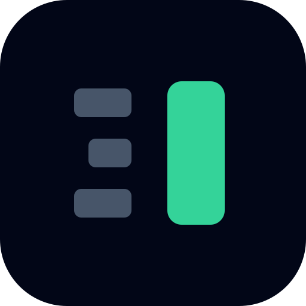

A small studio that rebuilds outdated websites with modern UI, performance, SEO, and security — free homepage sample within 48 hours.
The mark is a stylized B split vertically. On the left, three muted, fragmented bars represent the existing site — broken, inconsistent, dated. On the right, a single solid emerald bar represents the rebuild — clean, continuous, fast.
Read at a glance, the eye resolves the fragments into a unified form. That moment of resolution is the product.

BetterSite
Inter, weights 400 / 600 / 700 / 800. Tight tracking (-0.5 to -1.5px) on display. System fallback: system-ui, -apple-system, "Segoe UI", Helvetica, Arial.
/* CSS variables */
:root {
--bs-base: #020617;
--bs-surface: #0F172A;
--bs-accent: #34D399;
--bs-muted: #475569;
--bs-text: #F1F5F9;
}
/* Tailwind v4 (in your @theme block) */
@theme {
--color-bs-base: #020617;
--color-bs-surface: #0F172A;
--color-bs-accent: #34D399;
--color-bs-muted: #475569;
--color-bs-text: #F1F5F9;
}#34D399 sparingly — for the right-hand bar of the mark, the "Site" half of the wordmark, primary CTAs, and links only.favicon.svg below 24px — the full mark loses legibility).